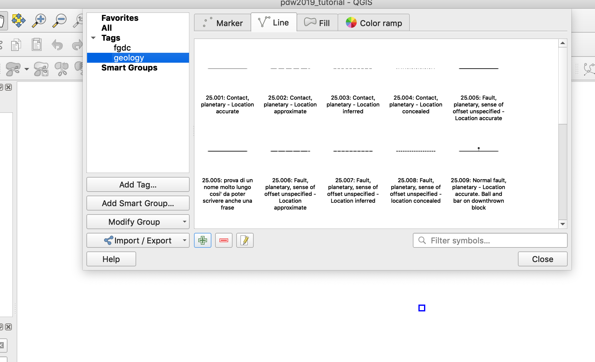

Adding new symbols to the library¶
Guidelines for new symbols¶
The symbol directory corresponds with the realative authority
The symbol’s name is composed by two parts: [NAME] : [Description]
Symbol’s developer/designer guide¶
This guide will drive you through the process of designing new symbols you can submit to the main repository.
All you have to do is to design your symbol and export it to an xml file which can then be added to the current library.
The Style Manager¶
The style manager allow to design a symbol from scratch.
# Authority’s specific Conventions
### FGCD
Naming:
XX.YYY: string
here XX is the name of the FGDC section, and YYY is the code of the symbol, padded with 0s if the number is lower than 100.